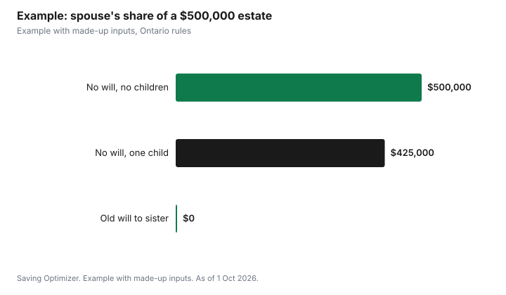

Weddings · Canada
Does Getting Married Affect Your Will? Ontario's 2022 Change, Intestacy and Beneficiaries
In Ontario, getting married no longer cancels an existing will. Since 1 January 2022, the Succession Law Reform Act's rule that marriage revokes a will has been repealed, so a will you made while single still applies after the wedding, even if it leaves everything to a parent, sibling or former partner. A will is now revoked only by a later will, a written revocation signed like a will, or destroying it with intent. If you have no will, intestacy rules give a married spouse the first $350,000 and a share of the rest, but a common-law partner gets nothing under those rules. After the wedding, make or update your will, check beneficiary designations, and set up powers of attorney.
Key takeaways
- Ontario: marriage no longer revokes a will (since 1 Jan 2022).
- Divorce, and now separation meeting set tests, treat the ex-spouse as if they died first.
- No will: spouse gets the first $350,000, then a half or third share with children.
- Common-law partners are not spouses for intestacy.
- Beneficiary designations on TFSAs, RRSPs and insurance pass outside the will.
- Example with made-up inputs: an estate with and without a will.
Provincial rules differ
Wills and estates are provincial law, so the effect of marriage on a will depends on where you live. This guide uses Ontario's Succession Law Reform Act. If you live elsewhere, check your province's legislation or ask a lawyer whether marriage revokes a will there, because the answer is not the same everywhere.
Ontario's 2022 change
| Before 1 Jan 2022 | From 1 Jan 2022 |
|---|---|
| Marriage revoked a will (with exceptions) | Marriage does not revoke a will |
| Another valid will | Another valid will |
| A written revocation made like a will | A written revocation made like a will |
| Destroying it with intent | Destroying it with intent |
Section 17(1) also says a will is not revoked by a presumed intention because circumstances change. In practice, that means you have to act yourself: a will that names someone other than your spouse keeps working until you replace it.
Divorce and separation
Section 17(2) says that when a marriage ends by divorce or is declared a nullity, gifts to the former spouse, their appointment as executor or trustee, and powers of appointment given to them are revoked, and the will is read as if the former spouse had died first, unless the will shows a contrary intention. Since 2022, sections 17(3) and (4) apply the same treatment if the spouses are separated at the time of death, which means they were living apart because the marriage broke down and, before death, had lived apart for three years immediately before death, signed a valid separation agreement, obtained a court order, or received a family arbitration award settling their affairs.
If you die without a will
| Survivors | Spouse receives |
|---|---|
| Spouse, no children or other issue | Everything (s.44) |
| Spouse and issue, estate up to $350,000 | Everything (s.45(1)) |
| Spouse and one child, estate over $350,000 | $350,000 plus half the rest (ss.45, 46(1)) |
| Spouse and two or more children, estate over $350,000 | $350,000 plus one-third of the rest (ss.45, 46(2)) |
The $350,000 preferential share is set by Ontario Regulation 54/95 for deaths on or after 1 March 2021. For these intestacy rules, spouse has the Family Law Act section 1 meaning, which covers married spouses, so a common-law partner has no automatic share. Section 43.1 says the intestacy entitlements do not apply to spouses who are separated at death under the same tests.
The surviving spouse's election
Under section 6 of the Family Law Act, when a married spouse dies with a will, the surviving spouse chooses either what the will gives them or an equalization entitlement under section 5, which is half the amount by which the deceased's net family property exceeds the survivor's. The election must be filed with the Estate Registrar for Ontario within six months after the death. A will that leaves little to a spouse may therefore be partly overridden; a lawyer can explain how this interacts with your plans.
Beneficiary designations
Registered plans and insurance often pass by beneficiary designation, outside the will. Ontario Regulation 54/95 makes TFSAs prescribed plans for designations under the Act. The CRA explains that a survivor named as successor holder of a TFSA becomes the new holder immediately on death, and the account stays tax-sheltered. Check every designation after the wedding: RRSP, RRIF, TFSA, FHSA, workplace pension, group life and personal life insurance. An old designation naming a parent or former partner stays in place until you change it.
Updating your will
- List assets, debts, accounts and designations.
- Decide who gets what, and who will be executor.
- Name guardians if you have or plan children.
- Consider whether a marriage contract affects your plan; see marriage contracts.
- Sign a new will that meets Ontario's formal requirements, which revokes earlier wills if it says so.
- Store it safely and tell your executor where it is.
Powers of attorney
A will only works after death. Powers of attorney for property and personal care cover decisions if you cannot make them yourself while alive. Marriage does not automatically make your spouse your attorney, so if you want your spouse to act, name them. Review these documents at the same time as your will.
Example with made-up inputs
These numbers are an example with made-up inputs, apart from the $350,000 preferential share. Jordan marries Riley in 2026 and has a 2019 will leaving everything to Jordan's sister. Jordan dies in 2027 with an estate of $500,000 and no children. Because marriage no longer revokes the will, the sister is named as beneficiary, and Riley's options run through the Family Law Act election or other claims. If Jordan had no will, Riley, as a married spouse with no issue involved, would receive the full $500,000 under section 44. If Jordan and Riley also had one child and no will, Riley would receive $350,000 plus half of the remaining $150,000, $425,000, and the child $75,000.
| Situation | Riley (spouse) under the will or intestacy |
|---|---|
| Old will leaving all to sister | $0 under the will; election or claims possible |
| No will, no children | $500,000 |
| No will, one child | $425,000 (child $75,000) |

Checklist
- Read your current will after the wedding.
- Make a new will if it does not reflect your marriage.
- Update every beneficiary designation.
- Name a TFSA successor holder where allowed.
- Sign powers of attorney.
- Review again after children, a home purchase or a separation.
Related: merging finances and funeral costs and the CPP death benefit.
Sources
- Succession Law Reform Act, R.S.O. 1990, c. S.26, ss. 15, 17, 43.1, 44 to 46, Ontario e-Laws, as of 1 Oct 2026.
- Ontario Regulation 54/95 (General) under the Succession Law Reform Act, as of 1 Oct 2026.
- Family Law Act, R.S.O. 1990, c. F.3, ss. 1, 5, 6, Ontario e-Laws, as of 1 Oct 2026.
- Canada Revenue Agency, Death of a TFSA holder, canada.ca, as of 1 Oct 2026.
- Names and estate values in the example are made-up inputs.
Frequently asked questions
Does marriage revoke a will in Ontario?
No. Since 1 January 2022, marriage no longer revokes a will in Ontario.
Does divorce revoke a will in Ontario?
Gifts to and appointments of the former spouse are revoked and the will is read as if they died first, unless the will shows a contrary intention.
Does separation affect a will in Ontario?
Since 2022, yes, if the spouses were separated at death under the Act's tests, such as three years living apart or a valid separation agreement.
What does a spouse get if there is no will in Ontario?
Everything if there are no children or other issue. With issue, the first $350,000 plus half the rest with one child, or one-third with two or more.
Does a common-law partner inherit without a will in Ontario?
Not under the intestacy rules, which use the married-spouse definition.
Do beneficiary designations override a will?
Registered plans and insurance often pass by designation. Check and update them after marriage.
Researched and drafted with AI assistance and fact-checked against official Canadian sources. How we create content.
Disclosure: Saving Optimizer may earn a commission if a partner link is added later. No partnership is claimed on this page. Education only, not legal advice.